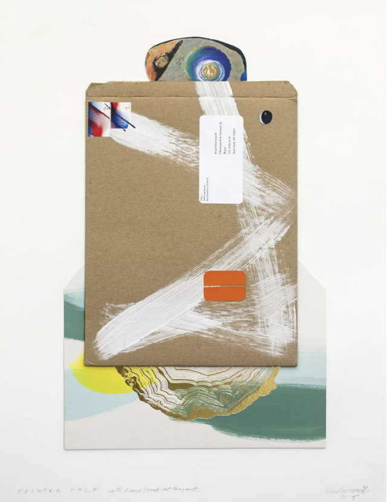
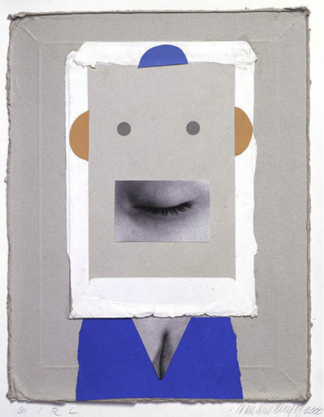
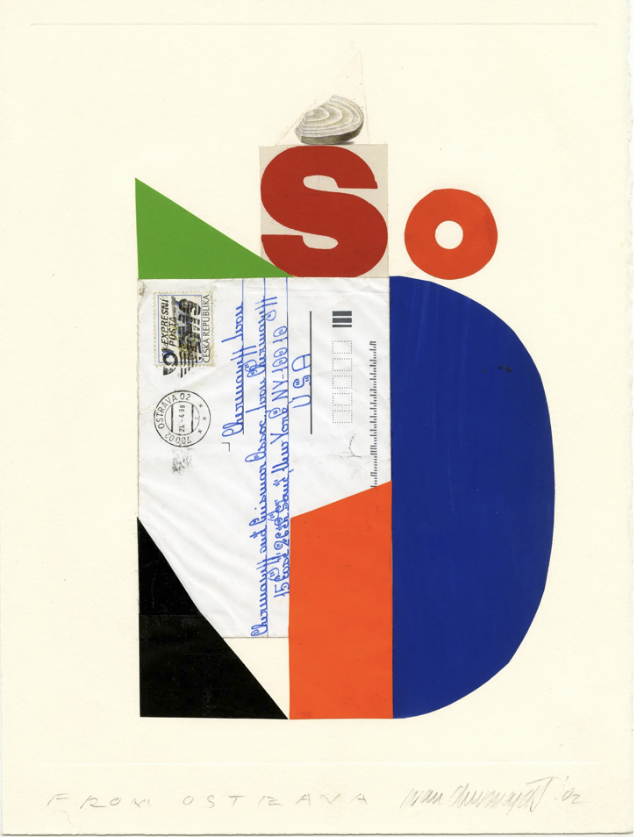
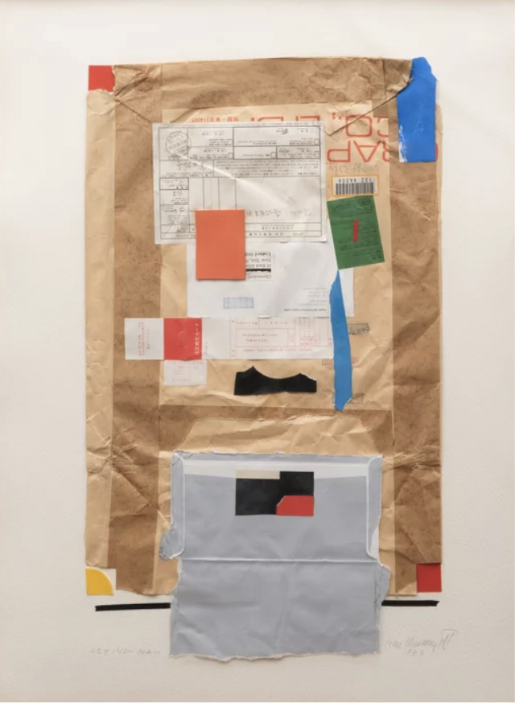

소개
인터뷰
콜라쥬
로고
그 외 작업물
COLLAGE

Printed Face with Enrico Donati Hat Fragment, 2015
Pavel Zoubok Gallery

GIRL, 2000
Pavel Zoubok Gallery

From Ostrava, 2002
Milton glaser design study center and archives

Crying Man, 1989
-